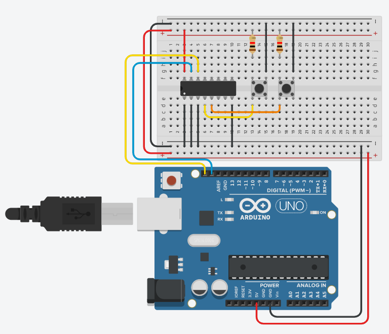

In de vorige oefening schreef je naar de expander, nu lees je ervan. Sluit twee drukknoppen aan op de PCF8574 en geef via de seriële monitor weer welke knop ingedrukt is.
Je vertrekt van de schakeling uit leds aansturen met de PCF8574: dezelfde chip op dezelfde twee lijnen, A0 tot A2 nog altijd aan GND, en dus ook hetzelfde adres dat je daar met de I2C scanner gevonden hebt.
Bij de Arduino kon je tijdens het definiëren van de pinMode instellen dat een pin als INPUT_PULLUP moest dienen. Bij de PCF8574AN ga je hier zelf voor moeten zorgen.
Voeg twee drukknoppen toe aan de schakeling, telkens met een pull-upweerstand. Een goede waarde is bijvoorbeeld 1 kOhm.

Als je er geen gebruikt, dan kan de ingang 'floating' zijn en wisselen tussen 0 en 1. Met een pull-up (of pull-down) weerstand zet je de toestand vast. In dit geval is de toestand in rust 1, en trekt een ingedrukte knop de pin naar 0.
Bekijk eens deze voorbeeldcode. Wat de bewerking met & precies doet, en waarom een byte je acht pinnen tegelijk geeft, staat op Werken met bits.
#include <Wire.h>
const int adresExpander = 0x38;
void setup()
{
Wire.begin();
Serial.begin(9600);
// Alle pinnen hoog zetten, anders lees je een pin die je zelf laag
// gezet hebt gewoon terug als een ingedrukte knop
Wire.beginTransmission(adresExpander);
Wire.write(0xFF);
Wire.endTransmission();
}
void loop()
{
Wire.requestFrom(adresExpander, 1);
byte waarde = 0;
if (Wire.available())
{
waarde = Wire.read();
bool knop1 = waarde & B00000001;
bool knop2 = waarde & B00000010;
if (knop1 == false) // pull-up: ingedrukt is 0
{
Serial.println("Knop 1 ingedrukt");
}
if (knop2 == false) // pull-up: ingedrukt is 0
{
Serial.println("Knop 2 ingedrukt");
}
}
}Het is een AND-bewerking op 2 getallen.
Stel dat waarde gelijk is aan 01010101, dan is het resultaat van de AND-bewerking 00000001, ofwel 1, ofwel true.
We zijn van de byte waarde enkel geïnteresseerd in de status van de laatste bit. Dezelfde redenering volgen we voor knop2, waarbij we enkel geïnteresseerd zijn in de voorlaatste bit.
De pinnen van de PCF8574 zijn quasi-bidirectioneel: er is geen aparte instelling voor ingang of uitgang. Een pin die je wil lezen moet een 1 hebben staan. Kom je hier rechtstreeks van de vorige oefening, dan staan P0 en P1 nog laag van je leds, en lees je die nullen terug alsof beide knoppen ingedrukt zijn. Zie Werken met de PCF8574.
Deze voorbeeldcode werkt, maar ze stuurt zolang je een knop ingedrukt houdt tientallen regels per seconde naar de monitor. Zorg ervoor dat je alleen iets ziet verschijnen wanneer er iets verandert: op het moment dat je een knop indrukt, en op het moment dat je ze weer loslaat.
Onthoud de vorige toestand van elke knop in een variabele buiten de loop(). Vergelijk bij elke doorloop de nieuwe toestand met de vorige, en stuur alleen iets naar de monitor als die twee verschillen. Vergeet daarna niet de vorige toestand bij te werken.
Sla je oefening op.
Overloop volgende checklist om je oefening zelf te evalueren:
Het lezen zelf zit in leesExpander(): die vraagt één byte op en geeft ze terug. Krijgt hij niets, dan geeft hij 0xFF terug, wat er uitziet als 'geen enkele knop ingedrukt'. Zo hoeft de rest van het programma geen rekening te houden met een mislukte overdracht.
In de loop() vergelijken we elke knop met zijn vorige toestand en sturen we alleen iets naar de monitor als die verschilt. De delay() op het einde is meteen een eenvoudige ontdendering, want een mechanische knop dendert bij het indrukken een paar milliseconden.
#include <Wire.h>
const int adresExpander = 0x38; // PCF8574AN met A0, A1 en A2 aan GND
const unsigned long ontdenderTijd = 50;
bool vorigeKnop1 = false;
bool vorigeKnop2 = false;
void schrijfExpander(byte waarde)
{
Wire.beginTransmission(adresExpander);
Wire.write(waarde);
Wire.endTransmission();
}
byte leesExpander()
{
Wire.requestFrom(adresExpander, 1);
if (Wire.available())
{
return Wire.read();
}
return 0xFF; // niets ontvangen: doe alsof geen enkele knop ingedrukt is
}
void setup()
{
Wire.begin();
Serial.begin(9600);
// Een pin van de PCF8574 leest pas betrouwbaar als zijn uitgangslatch hoog
// staat. Na het opstarten is dat al zo, maar we zetten het expliciet.
schrijfExpander(0xFF);
}
void loop()
{
byte waarde = leesExpander();
// Door de pull-upweerstand trekt een ingedrukte knop zijn pin naar 0
bool knop1 = (waarde & B00000001) == 0;
bool knop2 = (waarde & B00000010) == 0;
// Alleen bij een verandering iets sturen, anders loopt de monitor vol
if (knop1 != vorigeKnop1)
{
Serial.println(knop1 ? "Knop 1 ingedrukt" : "Knop 1 losgelaten");
vorigeKnop1 = knop1;
}
if (knop2 != vorigeKnop2)
{
Serial.println(knop2 ? "Knop 2 ingedrukt" : "Knop 2 losgelaten");
vorigeKnop2 = knop2;
}
delay(ontdenderTijd);
}